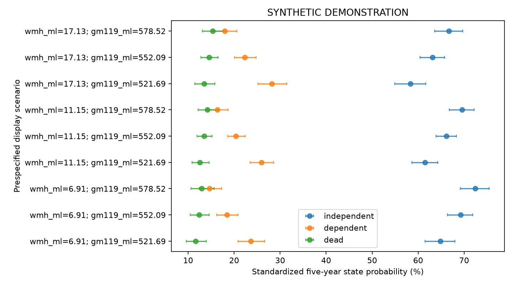

SYNTHETIC DEMONSTRATION — NOT PATIENT RESULTS
五项独立队列；不要求Hcy。患者行和ID仅保存在本地分析目录，不进入本报告。
| step | remaining | excluded_here |
|---|---|---|
| clinical_image_union | 2400 | 0 |
| adult_ischemic_stroke | 2400 | 0 |
| available_true_icv | 2400 | 0 |
| available_wmh_ml | 2400 | 0 |
| available_gm119_ml | 2400 | 0 |
| available_lesion_ml | 2400 | 0 |
| alive_at_month3 | 2400 | 0 |
| independent_at_month3 | 1965 | 435 |
| no_five_year_state_contradiction | 1965 | 0 |
| known_five_year_functional_state | 1822 | 143 |
| analysis | study | tier | family | status | n | outcome_unknown | parameters | imputations | p | statistic | df1 | df2 | r | method | m | p_bh_secondary |
|---|---|---|---|---|---|---|---|---|---|---|---|---|---|---|---|---|
| primary | recovery | primary | multinomial | ESTIMATED | 1822 | 0 | 66 | 2 | 1.794e-10 | 22.44 | 2 | 1.527e+08 | 9.911e-05 | D1 pooled multivariate Wald | 2 | NaN |
| complete_case | recovery | sensitivity | multinomial | ESTIMATED | 1733 | 0 | 66 | 1 | 1.526e-10 | 22.6 | 2 | inf | 0 | D1 pooled multivariate Wald | 1 | NaN |
| month12 | recovery | secondary | multinomial | ESTIMATED | 1834 | 0 | 66 | 2 | 4.673e-14 | 30.69 | 2 | 2.988e+11 | 2.241e-06 | D1 pooled multivariate Wald | 2 | 4.673e-14 |
| month24 | recovery | secondary | multinomial | ESTIMATED | 1801 | 0 | 66 | 2 | 6.256e-21 | 46.52 | 2 | 4.694e+09 | 1.788e-05 | D1 pooled multivariate Wald | 2 | 2.502e-20 |
| month36 | recovery | secondary | multinomial | ESTIMATED | 1826 | 0 | 66 | 2 | 4.364e-19 | 42.28 | 2 | 1.628e+08 | 9.599e-05 | D1 pooled multivariate Wald | 2 | 8.728e-19 |
| month48 | recovery | secondary | multinomial | ESTIMATED | 1818 | 0 | 66 | 2 | 2.804e-18 | 40.42 | 2 | 8.634e+08 | 4.168e-05 | D1 pooled multivariate Wald | 2 | 3.739e-18 |
| actual_improvement | recovery | sensitivity | multinomial | ESTIMATED | 1238 | 0 | 66 | 2 | 1.559e-08 | 17.98 | 2 | 8.756e+07 | 0.0001309 | D1 pooled multivariate Wald | 2 | NaN |
| raw_wmh | recovery | sensitivity | multinomial | ESTIMATED | 1822 | 0 | 66 | 2 | 1.771e-10 | 22.45 | 2 | 2.616e+09 | 2.395e-05 | D1 pooled multivariate Wald | 2 | NaN |
| dependent_or_dead | recovery | sensitivity | binary | ESTIMATED | 1822 | 0 | 33 | 2 | 1.501e-07 | 15.71 | 2 | 6.976e+08 | 4.637e-05 | D1 pooled multivariate Wald | 2 | NaN |
| observation_weighted | recovery | sensitivity | multinomial | ESTIMATED | 1822 | 143 | 66 | 2 | 9.192e-11 | 23.11 | 2 | 6.442e+09 | 1.526e-05 | D1 pooled multivariate Wald | 2 | NaN |
多分类系数取指数表示 P(该状态)/P(独立) 的比值之比，不能标为HR。联合检验显著不代表每个系数都显著。

| estimate | se | lower | upper | p | df | m | within_variance | between_variance | term | scale | ratio | ratio_lower | ratio_upper |
|---|---|---|---|---|---|---|---|---|---|---|---|---|---|
| -2.155 | 0.3464 | -2.834 | -1.476 | 4.894e-10 | 5.547e+08 | 2 | 0.12 | 3.396e-06 | dependent:intercept | relative_probability_ratio | 0.1159 | 0.05878 | 0.2285 |
| 0.2066 | 0.06436 | 0.08046 | 0.3327 | 0.001327 | 2.187e+08 | 2 | 0.004142 | 1.867e-07 | dependent:wmh_ml | relative_probability_ratio | 1.229 | 1.084 | 1.395 |
| -0.4278 | 0.06971 | -0.5645 | -0.2912 | 8.424e-10 | 4.668e+07 | 2 | 0.004859 | 4.743e-07 | dependent:gm119_ml | relative_probability_ratio | 0.6519 | 0.5687 | 0.7474 |
| -0.08507 | 0.1478 | -0.3747 | 0.2046 | 0.5649 | 1.321e+07 | 2 | 0.02184 | 4.007e-06 | dependent:age | relative_probability_ratio | 0.9185 | 0.6875 | 1.227 |
| 0.1901 | 0.163 | -0.1294 | 0.5096 | 0.2436 | 1.218e+07 | 2 | 0.02657 | 5.077e-06 | dependent:age_rcs | relative_probability_ratio | 1.209 | 0.8786 | 1.665 |
| 0.1783 | 0.1217 | -0.06019 | 0.4168 | 0.1428 | 2.295e+07 | 2 | 0.0148 | 2.06e-06 | dependent:sex_2 | relative_probability_ratio | 1.195 | 0.9416 | 1.517 |
| 0.09556 | 0.1711 | -0.2398 | 0.4309 | 0.5765 | 5.692e+06 | 2 | 0.02926 | 8.179e-06 | dependent:smoking_2 | relative_probability_ratio | 1.1 | 0.7868 | 1.539 |
| 0.1751 | 0.1675 | -0.1533 | 0.5035 | 0.296 | 2.28e+07 | 2 | 0.02806 | 3.919e-06 | dependent:smoking_3 | relative_probability_ratio | 1.191 | 0.8579 | 1.654 |
| 0.0005001 | 0.1741 | -0.3407 | 0.3417 | 0.9977 | 3.73e+07 | 2 | 0.0303 | 3.309e-06 | dependent:smoking_4 | relative_probability_ratio | 1.001 | 0.7113 | 1.407 |
| 0.2447 | 0.1762 | -0.1005 | 0.59 | 0.1648 | 8.14e+09 | 2 | 0.03103 | 2.293e-07 | dependent:drinking_2 | relative_probability_ratio | 1.277 | 0.9043 | 1.804 |
| 0.1122 | 0.1724 | -0.2257 | 0.45 | 0.5151 | 7.896e+11 | 2 | 0.02971 | 2.229e-08 | dependent:drinking_3 | relative_probability_ratio | 1.119 | 0.798 | 1.568 |
| 0.2588 | 0.171 | -0.07642 | 0.594 | 0.1303 | 1.988e+08 | 2 | 0.02925 | 1.383e-06 | dependent:drinking_4 | relative_probability_ratio | 1.295 | 0.9264 | 1.811 |
| 0.2868 | 0.1226 | 0.04651 | 0.5271 | 0.01933 | 6616 | 2 | 0.01484 | 0.0001232 | dependent:hypertension_2 | relative_probability_ratio | 1.332 | 1.048 | 1.694 |
| -0.04212 | 0.1217 | -0.2806 | 0.1963 | 0.7292 | 2.511e+07 | 2 | 0.0148 | 1.969e-06 | dependent:diabetes_2 | relative_probability_ratio | 0.9588 | 0.7554 | 1.217 |
| 0.1978 | 0.1218 | -0.04089 | 0.4365 | 0.1043 | 1.641e+08 | 2 | 0.01483 | 7.719e-07 | dependent:prior_stroke_2 | relative_probability_ratio | 1.219 | 0.9599 | 1.547 |
| 0.09307 | 0.1903 | -0.2799 | 0.466 | 0.6247 | 1.362e+05 | 2 | 0.03611 | 6.541e-05 | dependent:education_2 | relative_probability_ratio | 1.098 | 0.7559 | 1.594 |
| 0.03917 | 0.1922 | -0.3376 | 0.4159 | 0.8385 | 9151 | 2 | 0.03655 | 0.0002574 | dependent:education_3 | relative_probability_ratio | 1.04 | 0.7135 | 1.516 |
| 0.1363 | 0.1961 | -0.2489 | 0.5214 | 0.4874 | 571.3 | 2 | 0.03685 | 0.001073 | dependent:education_4 | relative_probability_ratio | 1.146 | 0.7796 | 1.684 |
| 0.06909 | 0.1981 | -0.3192 | 0.4574 | 0.7273 | 1.027e+04 | 2 | 0.03885 | 0.0002582 | dependent:education_5 | relative_probability_ratio | 1.072 | 0.7267 | 1.58 |
| -0.1343 | 0.2066 | -0.5393 | 0.2706 | 0.5156 | 3.313e+09 | 2 | 0.04268 | 4.944e-07 | dependent:pre_mrs_1 | relative_probability_ratio | 0.8743 | 0.5832 | 1.311 |
| -0.08836 | 0.2053 | -0.4906 | 0.3139 | 0.6668 | 2.46e+10 | 2 | 0.04213 | 1.791e-07 | dependent:pre_mrs_2 | relative_probability_ratio | 0.9154 | 0.6122 | 1.369 |
| -0.3286 | 0.2115 | -0.7432 | 0.08598 | 0.1203 | 9.099e+08 | 2 | 0.04475 | 9.889e-07 | dependent:pre_mrs_3 | relative_probability_ratio | 0.7199 | 0.4756 | 1.09 |
| -0.3306 | 0.2147 | -0.7514 | 0.09029 | 0.1237 | 9.529e+07 | 2 | 0.0461 | 3.149e-06 | dependent:pre_mrs_4 | relative_probability_ratio | 0.7185 | 0.4717 | 1.094 |
| 0.02301 | 0.2019 | -0.3727 | 0.4187 | 0.9093 | 1.938e+09 | 2 | 0.04076 | 6.173e-07 | dependent:pre_mrs_5 | relative_probability_ratio | 1.023 | 0.6889 | 1.52 |
| 0.03101 | 0.02988 | -0.02755 | 0.08957 | 0.2993 | 8.865e+09 | 2 | 0.0008927 | 6.321e-09 | dependent:nihss | relative_probability_ratio | 1.031 | 0.9728 | 1.094 |
| 0.43 | 0.1948 | 0.0481 | 0.8119 | 0.02733 | 1.224e+08 | 2 | 0.03796 | 2.287e-06 | dependent:toast_2 | relative_probability_ratio | 1.537 | 1.049 | 2.252 |
| 0.4859 | 0.195 | 0.1038 | 0.8681 | 0.01269 | 2.744e+12 | 2 | 0.03802 | 1.53e-08 | dependent:toast_3 | relative_probability_ratio | 1.626 | 1.109 | 2.382 |
| 0.2516 | 0.2014 | -0.1431 | 0.6463 | 0.2116 | 9.982e+07 | 2 | 0.04055 | 2.706e-06 | dependent:toast_4 | relative_probability_ratio | 1.286 | 0.8666 | 1.908 |
| 0.3261 | 0.1983 | -0.06269 | 0.7148 | 0.1002 | 4.81e+11 | 2 | 0.03934 | 3.782e-08 | dependent:toast_5 | relative_probability_ratio | 1.385 | 0.9392 | 2.044 |
| 0.09385 | 0.0989 | -0.09998 | 0.2877 | 0.3426 | 3.712e+08 | 2 | 0.00978 | 3.384e-07 | dependent:lesion_ml | relative_probability_ratio | 1.098 | 0.9049 | 1.333 |
| -0.1525 | 0.1558 | -0.4578 | 0.1528 | 0.3277 | 2.663e+08 | 2 | 0.02426 | 9.913e-07 | dependent:mrs3_1 | relative_probability_ratio | 0.8586 | 0.6327 | 1.165 |
| 0.3767 | 0.1499 | 0.08285 | 0.6705 | 0.01198 | 7.096e+07 | 2 | 0.02247 | 1.779e-06 | dependent:mrs3_2 | relative_probability_ratio | 1.457 | 1.086 | 1.955 |
| -0.05371 | 0.06769 | -0.1864 | 0.07897 | 0.4275 | 4.577e+06 | 2 | 0.00458 | 1.428e-06 | dependent:icv_ml | relative_probability_ratio | 0.9477 | 0.8299 | 1.082 |
| -2.81 | 0.4303 | -3.653 | -1.967 | 6.53e-11 | 3.195e+06 | 2 | 0.185 | 6.904e-05 | dead:intercept | relative_probability_ratio | 0.0602 | 0.0259 | 0.1399 |
| 0.1858 | 0.07661 | 0.03561 | 0.3359 | 0.01532 | 3.644e+13 | 2 | 0.005869 | 6.482e-10 | dead:wmh_ml | relative_probability_ratio | 1.204 | 1.036 | 1.399 |
| -0.005539 | 0.08202 | -0.1663 | 0.1552 | 0.9462 | 2.049e+10 | 2 | 0.006727 | 3.133e-08 | dead:gm119_ml | relative_probability_ratio | 0.9945 | 0.8468 | 1.168 |
| 0.05219 | 0.18 | -0.3006 | 0.405 | 0.7719 | 3.133e+08 | 2 | 0.03241 | 1.221e-06 | dead:age | relative_probability_ratio | 1.054 | 0.7403 | 1.499 |
| 0.3654 | 0.1891 | -0.005134 | 0.736 | 0.05326 | 3.727e+09 | 2 | 0.03574 | 3.903e-07 | dead:age_rcs | relative_probability_ratio | 1.441 | 0.9949 | 2.088 |
| 0.05362 | 0.1465 | -0.2335 | 0.3407 | 0.7143 | 9.57e+06 | 2 | 0.02145 | 4.623e-06 | dead:sex_2 | relative_probability_ratio | 1.055 | 0.7918 | 1.406 |
| 0.3131 | 0.2021 | -0.08308 | 0.7093 | 0.1214 | 3.411e+08 | 2 | 0.04086 | 1.475e-06 | dead:smoking_2 | relative_probability_ratio | 1.368 | 0.9203 | 2.033 |
| 0.2318 | 0.2039 | -0.1679 | 0.6314 | 0.2556 | 1.633e+09 | 2 | 0.04158 | 6.859e-07 | dead:smoking_3 | relative_probability_ratio | 1.261 | 0.8455 | 1.88 |
| -0.01524 | 0.215 | -0.4366 | 0.4061 | 0.9435 | 5.341e+10 | 2 | 0.04621 | 1.333e-07 | dead:smoking_4 | relative_probability_ratio | 0.9849 | 0.6463 | 1.501 |
| 0.2119 | 0.2113 | -0.2023 | 0.626 | 0.316 | 4.299e+07 | 2 | 0.04464 | 4.539e-06 | dead:drinking_2 | relative_probability_ratio | 1.236 | 0.8169 | 1.87 |
| 0.1106 | 0.2086 | -0.2983 | 0.5195 | 0.596 | 6.417e+06 | 2 | 0.04352 | 1.146e-05 | dead:drinking_3 | relative_probability_ratio | 1.117 | 0.7421 | 1.681 |
| 0.3113 | 0.2032 | -0.08696 | 0.7095 | 0.1255 | 1.848e+08 | 2 | 0.04128 | 2.025e-06 | dead:drinking_4 | relative_probability_ratio | 1.365 | 0.9167 | 2.033 |
| 0.04205 | 0.1476 | -0.2475 | 0.3316 | 0.7757 | 1331 | 2 | 0.02118 | 0.000398 | dead:hypertension_2 | relative_probability_ratio | 1.043 | 0.7808 | 1.393 |
| -0.3593 | 0.1469 | -0.6473 | -0.07131 | 0.01448 | 1.569e+08 | 2 | 0.02159 | 1.149e-06 | dead:diabetes_2 | relative_probability_ratio | 0.6981 | 0.5234 | 0.9312 |
| 0.07015 | 0.1462 | -0.2163 | 0.3566 | 0.6313 | 2.664e+08 | 2 | 0.02137 | 8.728e-07 | dead:prior_stroke_2 | relative_probability_ratio | 1.073 | 0.8055 | 1.429 |
| -0.132 | 0.2441 | -0.6106 | 0.3466 | 0.5888 | 5373 | 2 | 0.05878 | 0.000542 | dead:education_2 | relative_probability_ratio | 0.8764 | 0.543 | 1.414 |
| 0.1146 | 0.2335 | -0.3433 | 0.5724 | 0.6238 | 3716 | 2 | 0.05364 | 0.0005964 | dead:education_3 | relative_probability_ratio | 1.121 | 0.7094 | 1.773 |
| 0.1301 | 0.2347 | -0.3298 | 0.5901 | 0.5793 | 5.668e+04 | 2 | 0.05484 | 0.0001542 | dead:education_4 | relative_probability_ratio | 1.139 | 0.719 | 1.804 |
| 0.4515 | 0.2289 | 0.002368 | 0.9006 | 0.04881 | 1437 | 2 | 0.05103 | 0.0009217 | dead:education_5 | relative_probability_ratio | 1.571 | 1.002 | 2.461 |
| 0.2238 | 0.27 | -0.3054 | 0.7529 | 0.4072 | 1.143e+08 | 2 | 0.07288 | 4.545e-06 | dead:pre_mrs_1 | relative_probability_ratio | 1.251 | 0.7368 | 2.123 |
| 0.2507 | 0.2685 | -0.2755 | 0.7769 | 0.3505 | 3.106e+07 | 2 | 0.07207 | 8.622e-06 | dead:pre_mrs_2 | relative_probability_ratio | 1.285 | 0.7592 | 2.175 |
| 0.1898 | 0.2684 | -0.3363 | 0.7159 | 0.4794 | 3e+11 | 2 | 0.07205 | 8.769e-08 | dead:pre_mrs_3 | relative_probability_ratio | 1.209 | 0.7144 | 2.046 |
| 0.172 | 0.2725 | -0.3621 | 0.7062 | 0.5279 | 3.405e+08 | 2 | 0.07427 | 2.683e-06 | dead:pre_mrs_4 | relative_probability_ratio | 1.188 | 0.6962 | 2.026 |
| 0.4071 | 0.2623 | -0.107 | 0.9212 | 0.1206 | 7.785e+11 | 2 | 0.0688 | 5.198e-08 | dead:pre_mrs_5 | relative_probability_ratio | 1.503 | 0.8986 | 2.512 |
| 0.005728 | 0.03684 | -0.06648 | 0.07793 | 0.8764 | 1.688e+14 | 2 | 0.001357 | 6.964e-11 | dead:nihss | relative_probability_ratio | 1.006 | 0.9357 | 1.081 |
| 0.4555 | 0.2344 | -0.003902 | 0.9148 | 0.05198 | 1.159e+09 | 2 | 0.05493 | 1.076e-06 | dead:toast_2 | relative_probability_ratio | 1.577 | 0.9961 | 2.496 |
| 0.2849 | 0.243 | -0.1914 | 0.7611 | 0.241 | 9.831e+08 | 2 | 0.05903 | 1.255e-06 | dead:toast_3 | relative_probability_ratio | 1.33 | 0.8258 | 2.141 |
| 0.3692 | 0.2391 | -0.09948 | 0.8379 | 0.1226 | 1.673e+07 | 2 | 0.05717 | 9.319e-06 | dead:toast_4 | relative_probability_ratio | 1.447 | 0.9053 | 2.311 |
| 0.3335 | 0.24 | -0.137 | 0.8039 | 0.1648 | 1.782e+11 | 2 | 0.05762 | 9.098e-08 | dead:toast_5 | relative_probability_ratio | 1.396 | 0.872 | 2.234 |
| 0.2102 | 0.1164 | -0.01802 | 0.4383 | 0.07105 | 2.294e+06 | 2 | 0.01354 | 5.965e-06 | dead:lesion_ml | relative_probability_ratio | 1.234 | 0.9821 | 1.55 |
| 0.08244 | 0.1807 | -0.2718 | 0.4367 | 0.6483 | 3.535e+08 | 2 | 0.03266 | 1.158e-06 | dead:mrs3_1 | relative_probability_ratio | 1.086 | 0.762 | 1.548 |
| 0.1507 | 0.1852 | -0.2122 | 0.5137 | 0.4156 | 3.469e+08 | 2 | 0.03429 | 1.227e-06 | dead:mrs3_2 | relative_probability_ratio | 1.163 | 0.8088 | 1.671 |
| 0.04181 | 0.08061 | -0.1162 | 0.1998 | 0.604 | 9.399e+05 | 2 | 0.006492 | 4.469e-06 | dead:icv_ml | relative_probability_ratio | 1.043 | 0.8903 | 1.221 |
| wmh_ml | gm119_ml | state | probability | lower | upper | ci |
|---|---|---|---|---|---|---|
| 6.906 | 521.7 | independent | 0.648 | 0.6148 | 0.6799 | mean probability; Rubin variance; logit-delta pointwise CI; covariate distribution fixed |
| 6.906 | 521.7 | dependent | 0.2359 | 0.208 | 0.2663 | mean probability; Rubin variance; logit-delta pointwise CI; covariate distribution fixed |
| 6.906 | 521.7 | dead | 0.1161 | 0.09643 | 0.1391 | mean probability; Rubin variance; logit-delta pointwise CI; covariate distribution fixed |
| 6.906 | 552.1 | independent | 0.6921 | 0.6638 | 0.7191 | mean probability; Rubin variance; logit-delta pointwise CI; covariate distribution fixed |
| 6.906 | 552.1 | dependent | 0.1842 | 0.1622 | 0.2084 | mean probability; Rubin variance; logit-delta pointwise CI; covariate distribution fixed |
| 6.906 | 552.1 | dead | 0.1237 | 0.1048 | 0.1455 | mean probability; Rubin variance; logit-delta pointwise CI; covariate distribution fixed |
| 6.906 | 578.5 | independent | 0.7242 | 0.6914 | 0.7548 | mean probability; Rubin variance; logit-delta pointwise CI; covariate distribution fixed |
| 6.906 | 578.5 | dependent | 0.1466 | 0.1241 | 0.1723 | mean probability; Rubin variance; logit-delta pointwise CI; covariate distribution fixed |
| 6.906 | 578.5 | dead | 0.1292 | 0.1062 | 0.1563 | mean probability; Rubin variance; logit-delta pointwise CI; covariate distribution fixed |
| 11.15 | 521.7 | independent | 0.615 | 0.5862 | 0.6431 | mean probability; Rubin variance; logit-delta pointwise CI; covariate distribution fixed |
| 11.15 | 521.7 | dependent | 0.2594 | 0.2346 | 0.2858 | mean probability; Rubin variance; logit-delta pointwise CI; covariate distribution fixed |
| 11.15 | 521.7 | dead | 0.1256 | 0.1082 | 0.1453 | mean probability; Rubin variance; logit-delta pointwise CI; covariate distribution fixed |
| 11.15 | 552.1 | independent | 0.6613 | 0.639 | 0.683 | mean probability; Rubin variance; logit-delta pointwise CI; covariate distribution fixed |
| 11.15 | 552.1 | dependent | 0.204 | 0.1856 | 0.2236 | mean probability; Rubin variance; logit-delta pointwise CI; covariate distribution fixed |
| 11.15 | 552.1 | dead | 0.1347 | 0.1196 | 0.1515 | mean probability; Rubin variance; logit-delta pointwise CI; covariate distribution fixed |
| 11.15 | 578.5 | independent | 0.6954 | 0.6674 | 0.7221 | mean probability; Rubin variance; logit-delta pointwise CI; covariate distribution fixed |
| 11.15 | 578.5 | dependent | 0.1632 | 0.1425 | 0.1863 | mean probability; Rubin variance; logit-delta pointwise CI; covariate distribution fixed |
| 11.15 | 578.5 | dead | 0.1414 | 0.1214 | 0.164 | mean probability; Rubin variance; logit-delta pointwise CI; covariate distribution fixed |
| 17.13 | 521.7 | independent | 0.5833 | 0.5491 | 0.6168 | mean probability; Rubin variance; logit-delta pointwise CI; covariate distribution fixed |
| 17.13 | 521.7 | dependent | 0.2821 | 0.2519 | 0.3144 | mean probability; Rubin variance; logit-delta pointwise CI; covariate distribution fixed |
| 17.13 | 521.7 | dead | 0.1346 | 0.1143 | 0.1578 | mean probability; Rubin variance; logit-delta pointwise CI; covariate distribution fixed |
| 17.13 | 552.1 | independent | 0.6313 | 0.6039 | 0.6579 | mean probability; Rubin variance; logit-delta pointwise CI; covariate distribution fixed |
| 17.13 | 552.1 | dependent | 0.2234 | 0.2007 | 0.2478 | mean probability; Rubin variance; logit-delta pointwise CI; covariate distribution fixed |
| 17.13 | 552.1 | dead | 0.1453 | 0.1275 | 0.1651 | mean probability; Rubin variance; logit-delta pointwise CI; covariate distribution fixed |
| 17.13 | 578.5 | independent | 0.6671 | 0.6355 | 0.6973 | mean probability; Rubin variance; logit-delta pointwise CI; covariate distribution fixed |
| 17.13 | 578.5 | dependent | 0.1797 | 0.1559 | 0.2063 | mean probability; Rubin variance; logit-delta pointwise CI; covariate distribution fixed |
| 17.13 | 578.5 | dead | 0.1532 | 0.131 | 0.1783 | mean probability; Rubin variance; logit-delta pointwise CI; covariate distribution fixed |
完成模型 2；参数数 66；最大设计条件数 4.83。完整诊断见 fit_diagnostics.json。
缺失处理依赖MAR假设。功能状态图为固定访视结局的标准化概率，不是首次失能的累积发生率。血压分析是实测血压的条件关联。次要分析报告研究内BH-FDR；总汇报另列固定五项Holm校正。